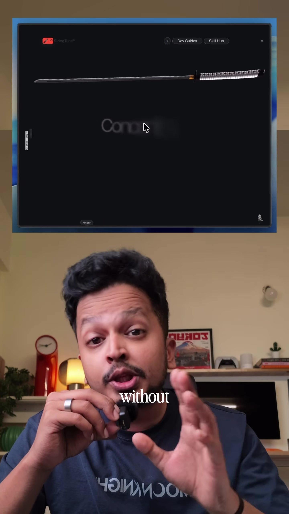
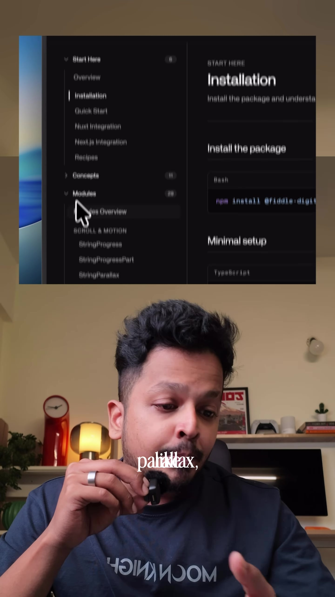
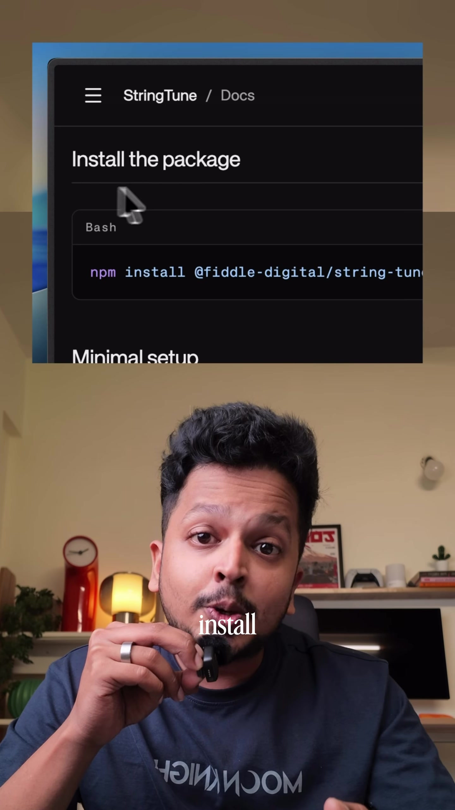
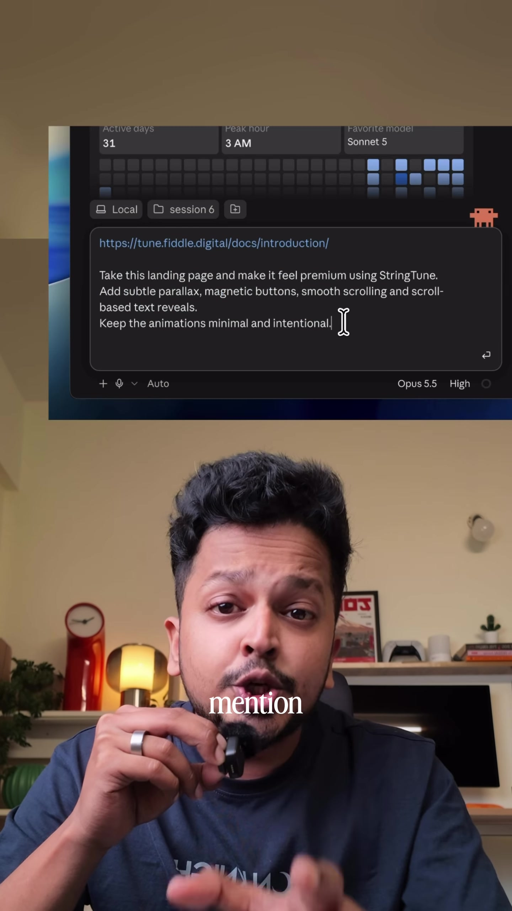

Frontend · Web-Animation
StringTune: Lightweight GSAP Alternative for Modern Web Scroll & Cursor Animations
GreenSock (GSAP) and ScrollTrigger have long been the industry gold standard for complex web animations, but they bring considerable bundle overhead (~70KB+ gzipped for full suite) and commercial license complexities. StringTune emerges as a modern, hyper-lightweight alternative designed specifically for sleek landing page interactions: scrubbed parallax, smooth glide inertia, scroll progress indicators, magnetic buttons, and custom interactive cursor trails. Combined with AI coding agents like Claude Code, developers can paste StringTune documentation directly into context to generate fluid micro-interactions in seconds.
Video Visual Stills




Why Move Beyond Monolithic Animation Engines?
| Attribute | GreenSock (GSAP) | StringTune |
|---|---|---|
| Bundle Size | Heavy (~65KB – 80KB+ with plugins) | Ultralight, tree-shakable modular core (<10KB) |
| API Surface | Massive, steep learning curve | Targeted declarative modules |
| AI Code Compatibility | Prone to hallucinating deprecated timeline syntax | Clean, atomic API easily ingested by Claude Code |
| Core Focus | Complex sequence timelines & canvas | Scroll, Parallax, Glide, Magnetic, & Cursor |
Core Animation Modules in StringTune
Multi-layer scroll depth with customizable speed multipliers, offset thresholds, and spring dampening.
Smooth buttery virtual scrolling that eliminates jittery default browser wheel events with hardware acceleration.
Precise viewport trigger ranges (0.0 to 1.0) for pinning elements, reading progress bars, and scrubbed typography.
Interactive CTA buttons and icons that attract smoothly toward the mouse pointer within an attraction radius.
Trailing fluid custom cursor states that morph, expand, and invert over interactive DOM elements.
Implementation & AI Workflow with Claude Code
-
Install the Package:
npm install stringtune # or pnpm add stringtune -
Feed Docs to Claude Code / AI Agent:
Pass the StringTune documentation URL directly into your prompt context:
claude "Read https://stringtune.com/docs and wire up a smooth magnetic button hover effect on all buttons with class .cta-magnet and a 0.35 spring damping factor." -
Declarative Usage Example:
import { Parallax, Magnetic, Cursor } from 'stringtune'; // Initialize custom cursor const cursor = new Cursor({ smoothness: 0.15, scaleOnHover: 2.5 }); // Magnetic button const cta = document.querySelector('.btn-primary'); new Magnetic(cta, { strength: 0.4, radius: 80 }); // Parallax hero image new Parallax('.hero-layer-bg', { speed: -0.2, direction: 'vertical' });